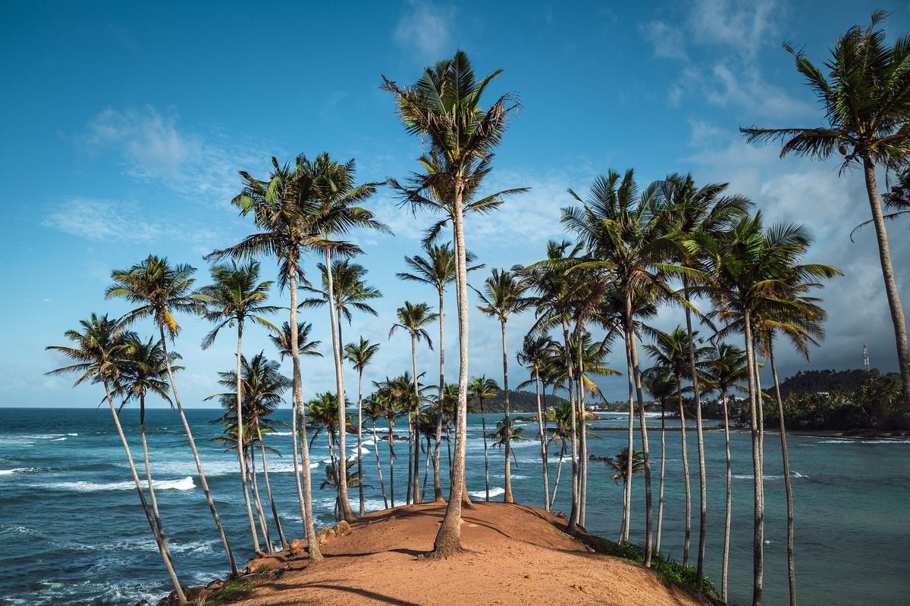

The most famous sunrise spot on the island, where towering palms meet the expansive blue of the Indian Ocean.
Coconut Tree Hill is a unique, dome-shaped mound of red earth covered in a perfectly-spaced plantation of tall coconut palms. It has quickly become one of the most photographed and shared locations in Sri Lanka due to its breathtaking symmetry and colors.
Located on the eastern edge of Mirissa Bay, it offers an unparalleled panoramic view of the coastline. Whether you visit for a quiet sunrise or to watch the waves crash against the base during sunset, the hill is an essential part of the coastal experience.
Back to Mirissa Hub